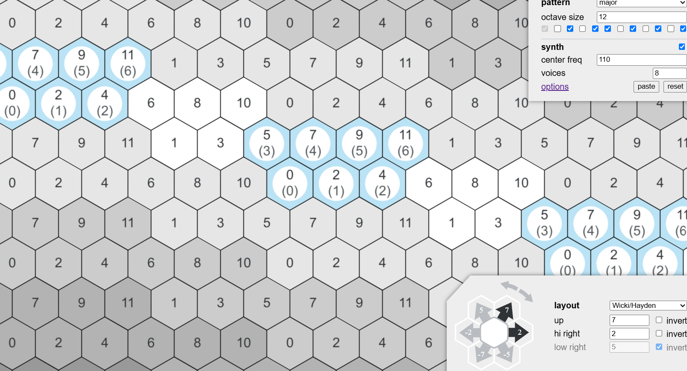

Design scenario
Prompt: musical tool for kids to explore music
Response: I want to create something that should be minimal in
language but rich enough to be easily understandable and
approachable. This should let the user explore music in some sort of
way, such as pitch and music theory. That would allow the user to be
able to explore music while being minimal enough to be easily
understood by a dumb baby to use and to pick up quickly as a
novel tool/toy. It should be technically complex enough to explore
more complex tonal relationships.
design responce
Create an interactive grid of tones that also allows multi-input to explore relations in musical sounds and pitch relationships such as microtonal and chords.
It explores more complex musical concepts with an experimental
approach, with the freedom to make mistakes. Being a grid of notes,
the stupid kid can press randomly and be able to hear the
various tones, and over time figure out how tones are arranged and
organised, which would continue to solidify their musical senses
design framing
So I want to build a grid of notes, but im worried that it would be a bit much in the scope of building (too many notes to consider), or I could just use vector paths though, I wouldn’t know how to make it interactive… The project should be built using a series of buttons that would be its own class or a series of divs in a grid instead.
design Analysis

S-ol Isomorphic keyboard
A idomorphic keyboard for exploring musical scales and seeing they way various notes are laied made exploring musical relations a bit more visual.
 the Lumatone is a keyboard that follows the same concept on mapping notes in a 2d plane which can be represented on a screen and made interactive.
the Lumatone is a keyboard that follows the same concept on mapping notes in a 2d plane which can be represented on a screen and made interactive.